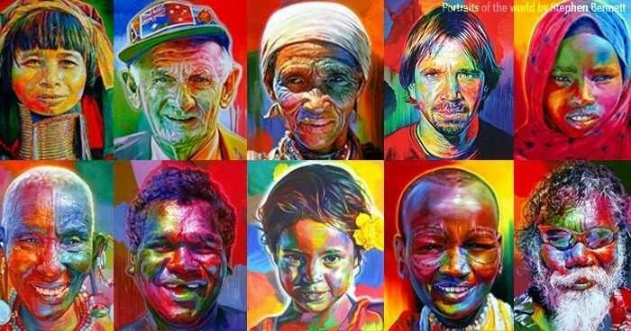

La sociedad y la cultura son pilares fundamentales que definen la identidad, las relaciones humanas y la estructura de las comunidades en todo el mundo. En un contexto global marcado por la interconexión y la diversidad, comprender cómo evolucionan estos conceptos es esencial para fomentar la inclusión, el respeto y la equidad.
Multiculturalidad e Interculturalidad en Guatemala
Guatemala es un país pluricultural, plurilingüe y multiétnico, reconocido oficialmente como tal en los Acuerdos de Paz de 1996. Sin embargo, la realidad histórica ha estado marcada por la exclusión y la discriminación hacia los pueblos indígenas, que constituyen alrededor del 44% de la población, según estimaciones del Instituto Nacional de Estadística (INE) de Guatemala.
La sociedad guatemalteca es un claro ejemplo de hibridaje cultural, concepto desarrollado por Néstor García Canclini, donde coexisten y se mezclan tradiciones mayas, garífunas, xinkas y ladinas. A pesar de esta riqueza, persisten desafíos profundos de inequidad y acceso desigual a recursos como la educación, la tierra y la representación política.
Género y Equidad en la Sociedad Guatemalteca
La intersección entre género, etnia y clase en Guatemala crea realidades complejas. Las mujeres, especialmente las indígenas y rurales, enfrentan múltiples formas de discriminación. Según un informe de ONU Mujeres y el PNUD, presentan altos índices de pobreza, menores tasas de alfabetización y son las más afectadas por la violencia de género.
"Al mismo tiempo, son las mujeres indígenas quienes han estado al frente de la defensa del territorio y los recursos naturales, liderando movimientos de resistencia contra megaproyectos extractivistas."Lolita Chávez, defensora de derechos humanos k'iche'
Esta igualdad no solo beneficia a las comunidades, sino que sirve de modelo para una sociedad más justa en Guatemala y más allá.
Diversidad de Voces e Inclusión de Perspectivas Múltiples desde Guatemala
Es esencial incluir voces de diferentes grupos culturales, étnicos y de género para evitar sesgos y enriquecer el discurso. La escritora Chimamanda Ngozi Adichie advierte sobre el "peligro de una sola historia", subrayando la necesidad de representar la complejidad de las experiencias humanas (Adichie, 2009).
En Guatemala, es crucial amplificar las voces de:
- Autoras y pensadoras mayas: Como la poeta Rosa Chávez (Maya Kaqchikel) o la académica Irma Alicia Velásquez Nimatuj (Maya K'iche'), cuyos trabajos analizan el racismo y el patriarcado desde una perspectiva interna.
- Líderes comunitarios: Que defienden los derechos colectivos desde las propias comunidades.
- Jóvenes y comunidad LGBTQ+: Cuyas perspectivas desafían las normas tradicionales y enriquecen el debate sobre la identidad nacional.